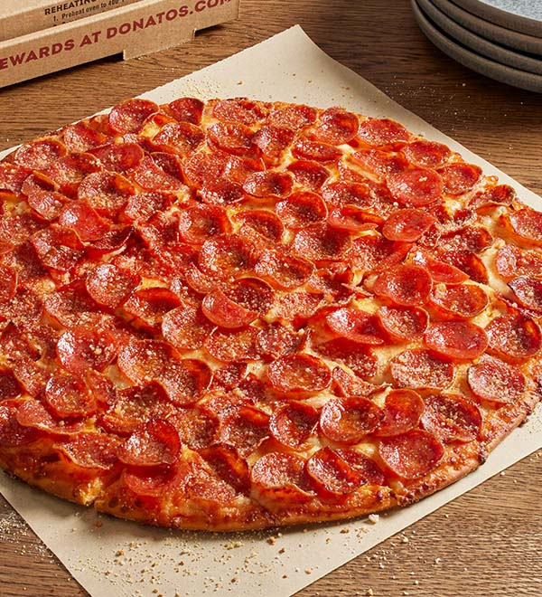

Pizza

Description
Although, we don't have a brick oven to make our wondeful pizza, we can recreate the same exact pizza we love in our own homes with the following recipe!
If you don't have time to make the dough it is perfectly fine to buy store bought dough. From there we will add some delicious tomato sauce, (once again you
can buy the sauce) next add some delicious mozzarella, and finally, your toppings!
Ingredients
For pizza dough
- 16 ounces bread flour* about 3 3/4 cups, plus more for dusting
- 1 tablespoon granulated sugar
- 2 teaspoons kosher salt
- 1/2 teaspoon active dry yeast
- 1 1/4 cups ice water
- 1 tablespoon vegetable oil plus more for the work surface and bowl
For the pizza sauce
- 1 (28-ounce) ca whole peeled tomatoes undrained
- 2 medium garlic cloves minced
- 1 teaspoon kosher salt
- 1 teaspoon dried oregano
- 1/4 teaspoon red pepper flakes or more, to taste
- 1/2 teaspoon dried basil
- 1/2 teaspoon granulated sugar
For toppings
- 8 ounces low-moisture whole-milk mozzarella or more, shredded
- toppings of your choice
Steps
For dough
- In a food processor we are going to mix together the bread flour, sugar, sat, and yeast until well mixed.
- In a measuring cup, combine ice water and 1 tablespoon of vegetable oil for 20-30 seconds, until a ball of sticky dough forms.
- Move the dough into an oiled surface, and knead it until smooth, place it in a bowl and cover it with plastic. Refegirate overnight before using.
For the Sauce
- In the same food processor combine the tomatoes, garlic, salt, oregano, red pepper flakes, basil, and some sugar. Process it until you see the sauce become smooth.
Assembling the Pizza
- Divide the dough to your liking of size.
- Preheat your oven to 450-550 Farenheit or the highest setting your oven can go.
- Dust your workspace with flour and place your dough on top. Begin pressing the dough until gets wider and leave the edges thicker for your crust.
- Pick up your dough and let gravity stretch it out. Until you get a size of your preferance.
- Begin to lather your dough with sauce, once again to your liking. Just remember to evenly coat it and make sure some of the border of your dough is exposed.s
- Scatter the mozzarella, and pop it in the oven. Make sure the crust is well browned and the cheese is bubbling.